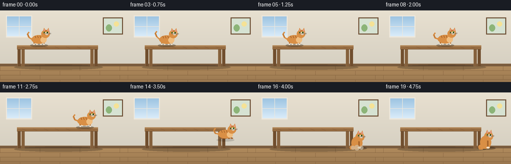
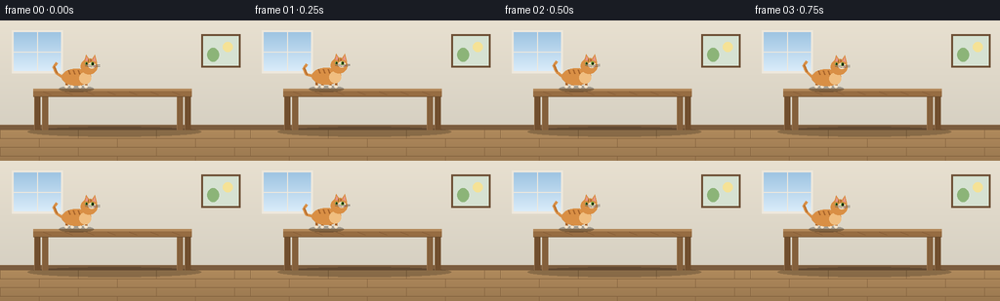

CODING AGENTS AS PIXEL WORLD MODELS
traex/Seed-2.1-Pro-0915 · dynamic_spatial_relationship_0010
点击播放 · 原生 RGB 像素
逐轮保存的候选
回放视频、检查图与代码变化。
每份候选均可单独播放。实际图片检查记录在下方工具轨迹中。
候选 01播放与检查图
点击播放 · 原生 RGB 像素


展开代码变化
--- 上一保存版本
+++ 本次保存版本
@@ -0,0 +1,272 @@
+"""Procedural text-to-video: a cat on a table runs and jumps to its foot.
+
+Renders 20 RGB frames (256x144, 4 fps) with PIL/numpy only and saves them
+through artifact_io.save. No external assets, models, or network access.
+"""
+import math
+from pathlib import Path
+
+import numpy as np
+from PIL import Image, ImageDraw, ImageFilter
+
+import artifact_io
+
+W, H, N, FPS = 256, 144, 20, 4.0
+SS = 2 # supersampling factor for smooth edges
+
+# Scene geometry (in final-resolution coordinates)
+FLOOR_Y = 112
+TABLE = {"x0": 34, "x1": 196, "top": 70, "bottom": 78}
+
+FUR = (217, 143, 69)
+FUR_DARK = (166, 99, 42)
+FUR_LIGHT = (240, 190, 128)
+CREAM = (243, 226, 200)
+PINK = (232, 150, 144)
+EYE = (111, 174, 63)
+
+
+def smoothstep(a, b, x):
+ u = np.clip((x - a) / (b - a), 0.0, 1.0)
+ return u * u * (3 - 2 * u)
+
+
+def draw_room(d):
+ """Wall, floor, window, picture, baseboard."""
+ # Wall with a soft vertical gradient.
+ for y in range(FLOOR_Y * SS):
+ t = y / (FLOOR_Y * SS)
+ c = (
+ int(232 - 18 * t),
+ int(224 - 16 * t),
+ int(208 - 14 * t),
+ )
+ d.line([(0, y), (W * SS, y)], fill=c)
+ # Floor: warm wood with horizontal planks.
+ for y in range(FLOOR_Y * SS, H * SS):
+ t = (y - FLOOR_Y * SS) / ((H - FLOOR_Y) * SS)
+ base = (176 - 22 * t, 138 - 18 * t, 92 - 12 * t)
+ d.line([(0, y), (W * SS, y)], fill=tuple(int(v) for v in base))
+ plank_h = 9 * SS
+ for i, y in enumerate(range(FLOOR_Y * SS, H * SS, plank_h)):
+ d.line([(0, y), (W * SS, y)], fill=(120, 88, 54))
+ offset = (i % 2) * 40 * SS
+ for x in range(offset, W * SS, 80 * SS):
+ d.line([(x, y), (x, min(y + plank_h, H * SS))], fill=(128, 95, 60))
+ # Baseboard.
+ d.rectangle([0, (FLOOR_Y - 5) * SS, W * SS, FLOOR_Y * SS], fill=(122, 92, 62))
+ d.line([0, (FLOOR_Y - 5) * SS, W * SS, (FLOOR_Y - 5) * SS], fill=(150, 118, 84))
+
+ # Window on the left wall.
+ wx0, wy0, wx1, wy1 = 14 * SS, 12 * SS, 62 * SS, 52 * SS
+ d.rectangle([wx0 - 2 * SS, wy0 - 2 * SS, wx1 + 2 * SS, wy1 + 2 * SS],
+ fill=(238, 232, 220))
+ for y in range(wy0, wy1):
+ t = (y - wy0) / max(1, wy1 - wy0)
+ d.line([(wx0, y), (wx1, y)],
+ fill=(int(158 + 60 * t), int(196 + 40 * t), int(226 + 24 * t)))
+ d.line([(wx0 + wx1) // 2, wy0, (wx0 + wx1) // 2, wy1], fill=(238, 232, 220), width=SS)
+ d.line([wx0, (wy0 + wy1) // 2, wx1, (wy0 + wy1) // 2], fill=(238, 232, 220), width=SS)
+
+ # Framed picture on the right wall.
+ px0, py0, px1, py1 = 208 * SS, 16 * SS, 244 * SS, 46 * SS
+ d.rectangle([px0 - 2 * SS, py0 - 2 * SS, px1 + 2 * SS, py1 + 2 * SS],
+ fill=(110, 80, 54))
+ d.rectangle([px0, py0, px1, py1], fill=(214, 226, 210))
+ d.ellipse([px0 + 4 * SS, py0 + 12 * SS, px0 + 16 * SS, py1 - 4 * SS],
+ fill=(140, 180, 120)) # little hill
+ d.ellipse([px1 - 16 * SS, py0 + 6 * SS, px1 - 6 * SS, py0 + 16 * SS],
+ fill=(245, 226, 150)) # sun
+
+
+def draw_table(d):
+ x0, x1, top, bottom = TABLE["x0"], TABLE["x1"], TABLE["top"], TABLE["bottom"]
+ # Soft contact shadow on the floor.
+ shadow = Image.new("RGBA", (W * SS, H * SS), (0, 0, 0, 0))
+ sd = ImageDraw.Draw(shadow)
+ sd.ellipse([(x0 - 6) * SS, (FLOOR_Y - 3) * SS, (x1 + 10) * SS, (FLOOR_Y + 7) * SS],
+ fill=(0, 0, 0, 55))
+ return shadow
+
+
+def paint_table(d):
+ x0, x1, top, bottom = TABLE["x0"], TABLE["x1"], TABLE["top"], TABLE["bottom"]
+ # Legs (rear legs slightly lighter, drawn first).
+ for lx, color in [((x0 + 12), (132, 96, 60)), ((x1 - 12), (132, 96, 60)),
+ (x0 + 4, (112, 78, 46)), (x1 - 4, (112, 78, 46))]:
+ d.rectangle([(lx - 3) * SS, bottom * SS, (lx + 3) * SS, FLOOR_Y * SS],
+ fill=color)
+ d.line([(lx - 3) * SS, bottom * SS, (lx - 3) * SS, FLOOR_Y * SS],
+ fill=(160, 122, 82), width=max(1, SS // 2))
+ # Tabletop.
+ d.rectangle([x0 * SS, top * SS, x1 * SS, bottom * SS], fill=(150, 108, 66))
+ d.rectangle([x0 * SS, top * SS, x1 * SS, (top + 2) * SS], fill=(178, 136, 90))
+ d.line([x0 * SS, bottom * SS, x1 * SS, bottom * SS], fill=(96, 68, 40))
+ # Wood grain hints.
+ for gx in range(x0 + 10, x1, 22):
+ d.line([gx * SS, (top + 3) * SS, (gx + 8) * SS, (bottom - 2) * SS],
+ fill=(128, 88, 52), width=1)
+
+
+def cat_pose(i):
+ """Return (foot_x, foot_y, pose, phase) for frame i."""
+ if i <= 4: # idle on the tabletop
+ return 78, TABLE["top"], "idle", i
+ if i <= 11: # run across the table toward its right edge
+ u = smoothstep(5, 11, i)
+ return 78 + (170 - 78) * u, TABLE["top"], "run", (i - 5) * 1.35
+ if i <= 15: # jump off the edge, falling to the floor at the table's foot
+ u = (i - 11) / 4.0
+ x = 170 + 34 * u
+ y = TABLE["top"] + (FLOOR_Y - TABLE["top"]) * (u ** 1.7)
+ return x, y, "jump", u
+ # land and settle into a sit on the floor
+ u = smoothstep(16, 19, i)
+ return 205 + 2 * u, FLOOR_Y, "sit", u
+
+
+def draw_cat(base, fx, fy, pose, phase):
+ """Draw a right-facing tabby cat whose feet are at (fx, fy)."""
+ layer = Image.new("RGBA", (W * SS, H * SS), (0, 0, 0, 0))
+ d = ImageDraw.Draw(layer)
+ s = SS
+ ox, oy = fx * s, fy * s
+
+ def ell(cx, cy, rx, ry, fill, outline=None):
+ d.ellipse([ox + (cx - rx) * s, oy + (cy - ry) * s,
+ ox + (cx + rx) * s, oy + (cy + ry) * s],
+ fill=fill, outline=outline)
+
+ def line(pts, fill, width=1):
+ d.line([(ox + x * s, oy + y * s) for x, y in pts], fill=fill,
+ width=max(1, int(round(width * s))))
+
+ def poly(pts, fill):
+ d.polygon([(ox + x * s, oy + y * s) for x, y in pts], fill=fill)
+
+ # Grounding shadow (oval directly beneath the cat).
+ sh = Image.new("RGBA", (W * SS, H * SS), (0, 0, 0, 0))
+ shd = ImageDraw.Draw(sh)
+ shd.ellipse([ox - 18 * s, oy - 3 * s, ox + 18 * s, oy + 3 * s],
+ fill=(0, 0, 0, 70 if pose != "jump" else 35))
+ base.alpha_composite(sh)
+
+ bob = 0.0
+ if pose == "run":
+ bob = -1.6 * abs(math.sin(phase * math.pi))
+ elif pose == "idle":
+ bob = -0.6 * math.sin(phase * 1.4)
+ elif pose == "sit":
+ bob = 1.5 * (1 - phase) # landing crouch eases up
+
+ if pose == "sit":
+ # Upright sitting body, haunches, vertical front legs.
+ ell(-2, -12 + bob, 11, 13, FUR) # body
+ ell(-6, -4 + bob, 9, 5, FUR) # haunch
+ line([(2, -18 + bob), (2, -1)], FUR_DARK, 3) # front leg
+ line([(5, -18 + bob), (5, -1)], FUR, 3)
+ ell(3, -1, 3.4, 1.8, CREAM) # front paws
+ head_y = -24 + bob
+ ell(4, head_y, 9, 8.5, FUR)
+ poly([( -2, head_y - 6), (1, head_y - 13), (4, head_y - 6)], FUR)
+ poly([(5, head_y - 6), (9, head_y - 13), (11, head_y - 5)], FUR)
+ poly([(0, head_y - 7), (1.5, head_y - 11), (3, head_y - 7)], PINK)
+ poly([(6.5, head_y - 7), (8.5, head_y - 11), (9.5, head_y - 6)], PINK)
+ # tail curled around haunches
+ line([(-10, -8 + bob), (-16, -4 + bob), (-15, 1), (-8, 1)], FUR, 3)
+ hx, hy = 4, head_y
+ else:
+ body_cy = -12 + bob
+ # Tail behind body, with gentle sway.
+ sway = 2.2 * math.sin(phase * 1.8) if pose != "jump" else 3.0
+ tail_pts = [(-14, body_cy), (-20, body_cy - 4 + sway),
+ (-23, body_cy - 11 + sway), (-20, body_cy - 15 + sway)]
+ line(tail_pts, FUR, 3)
+ line([(tail_pts[1][0] + 0.5, tail_pts[1][1]),
+ (tail_pts[2][0] + 0.5, tail_pts[2][1])], FUR_DARK, 1)
+
+ # Legs: animated gait when running; tucked when airborne.
+ leg_y = -2
+ if pose == "jump":
+ for lx in (-9, -3, 4, 10):
+ line([(lx, body_cy + 4), (lx + 2, body_cy + 9), (lx + 5, body_cy + 8)],
+ FUR_DARK, 2.4)
+ else:
+ gait = phase * math.pi
+ swings = [math.sin(gait), math.sin(gait + math.pi),
+ math.sin(gait + math.pi), math.sin(gait)]
+ for lx, sw in zip((-10, -4, 4, 10), swings):
+ lift = max(0.0, -sw) * 4 if pose == "run" else 0.0
+ foot_x = lx + sw * (3.2 if pose == "run" else 0.6)
+ line([(lx, body_cy + 4), (foot_x, leg_y - lift)], FUR_DARK, 2.4)
+ ell(foot_x, leg_y - lift, 1.6, 1.2, CREAM)
+
+ # Body and chest.
+ ell(0, body_cy, 15, 8.5, FUR)
+ ell(9, body_cy + 1, 6, 6, FUR_LIGHT)
+ # Tabby stripes along the back.
+ for sx in (-8, -3, 2):
+ line([(sx, body_cy - 7), (sx + 1.5, body_cy - 3)], FUR_DARK, 1.4)
+
+ head_y = body_cy - 11 + (2 if pose == "jump" else 0)
+ hx = 13
+ ell(hx, head_y, 8.5, 8, FUR)
+ poly([(hx - 5, head_y - 5), (hx - 3, head_y - 12), (hx + 1, head_y - 6)], FUR)
+ poly([(hx + 2, head_y - 6), (hx + 6, head_y - 12), (hx + 8, head_y - 4)], FUR)
+ poly([(hx - 3.5, head_y - 6), (hx - 2.5, head_y - 10), (hx - 0.5, head_y - 6)], PINK)
+ poly([(hx + 4, head_y - 6), (hx + 5.5, head_y - 10), (hx + 6.5, head_y - 5)], PINK)
+ hy = head_y
+
+ # Face details (shared by all poses).
+ ell(hx + 3, hy - 1, 3.6, 3.0, CREAM) # muzzle
+ ell(hx + 3.5, hy - 2.6, 1.5, 1.7, EYE) # eye
+ ell(hx + 3.9, hy - 2.6, 0.7, 1.1, (20, 24, 18)) # pupil
+ ell(hx - 2.5, hy - 2.6, 1.3, 1.5, EYE)
+ ell(hx - 2.2, hy - 2.6, 0.6, 1.0, (20, 24, 18))
+ poly([(hx + 5.4, hy - 0.4), (hx + 6.8, hy - 0.4), (hx + 6.1, hy + 0.6)], PINK) # nose
+ for wy in (-0.6, 0.8):
+ line([(hx + 3, hy + wy), (hx - 4, hy + wy - 1.2)], (90, 80, 70), 0.7)
+ line([(hx + 4, hy + wy), (hx + 11, hy + wy - 0.8)], (90, 80, 70), 0.7)
+ # Forehead stripes.
+ line([(hx - 1, hy - 7), (hx - 1, hy - 4.5)], FUR_DARK, 1.2)
+ line([(hx + 1.5, hy - 7.2), (hx + 1.5, hy - 4.6)], FUR_DARK, 1.2)
+
+ base.alpha_composite(layer)
+
+
+def landing_puff(base, i):
+ """Small dust puff on the landing frame."""
+ if i != 16:
+ return
+ puff = Image.new("RGBA", (W * SS, H * SS), (0, 0, 0, 0))
+ pd = ImageDraw.Draw(puff)
+ for k, (dx, r) in enumerate(((-10, 4), (-2, 5.5), (7, 4))):
+ cx, cy = (205 + dx) * SS, (FLOOR_Y - 1) * SS
+ pd.ellipse([cx - r * SS, cy - r * SS, cx + r * SS, cy + r * SS],
+ fill=(210, 196, 172, 160))
+ base.alpha_composite(puff)
+
+
+def render_frame(i):
+ img = Image.new("RGBA", (W * SS, H * SS), (0, 0, 0, 255))
+ d = ImageDraw.Draw(img)
+ draw_room(d)
+ img.alpha_composite(draw_table(d))
+ paint_table(d)
+ fx, fy, pose, phase = cat_pose(i)
+ draw_cat(img, fx, fy, pose, phase)
+ landing_puff(img, i)
+ img = img.convert("RGB").resize((W, H), Image.LANCZOS)
+ # Gentle denoise-like smoothing from supersampling; slight sharpening.
+ return np.asarray(img, dtype=np.uint8)
+
+
+def main():
+ case_dir = Path(__file__).parent
+ frames = np.stack([render_frame(i) for i in range(N)], axis=0)
+ artifact_io.save(frames, case_dir)
+ print(f"Saved {frames.shape} frames to {case_dir}")
+
+
+if __name__ == "__main__":
+ main()
可观测工具轨迹
实际执行的命令与返回图片。
命令 1exit 0
/bin/bash -lc 'cat prompt.txt GENERATION_RULES.md task_spec.json 2>/dev/null; ls -la'
命令 2exit 0
/bin/bash -lc 'cat artifact_io.py'
命令 3exit 0
/bin/bash -lc 'cd "$(pwd)" && python generate.py'
保存候选 1 份；完成命令 3 次；可验证图片返回 0 张。原始 API 响应与完整日志保留在本地。